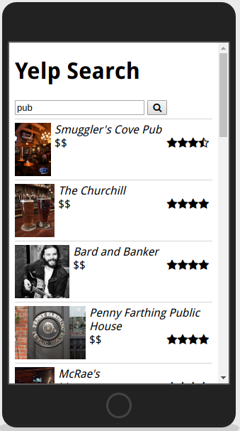
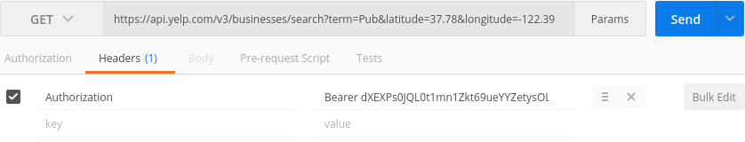
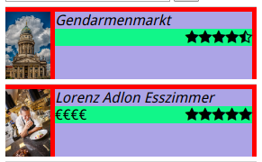

In this tutorial, you will make your first AJAX requests: using Yelp's API and the browser geolocation, you will make a search for local businesses on Yelp, and show the results in a list, like this:

As with the previous assignment, you shouldn't modify the index.html file.
To be able to sent requests to Yelp, you need an access token (so that Yelp can prevent abuse of the API). If you paid attention to the last lecture, this part should be easy:
ACCESS_TOKEN variable that is on the first line of your JavaScript code.Now that you have an access token, you can try it out with Postman. Go look at the documentation of the search endpoint: the "Request" section tells you the type of HTTP request you need to send (GET), and the URL; the "Parameters" section gives you the list of parameters that are passed in the URL query string, most are optional, but some are required.
Let's try a sample request with Postman: make a GET request with the following URL: https://api.yelp.com/v3/businesses/search?term=Pub&latitude=37.78&longitude=-122.39, which should return a list of pubs around San Francisco. If you hit send, you should receive a response with an error code of 401, which means that you are not authorized to get the data. That's normal, we forgot to add the access token.
In Postman, add a header to the request: the header key should be Authorization and the value should be Bearer yourToken (replace yourToken by the actual access token), like this:

This time if you hit send, you should receive a response: and object with a property named businesses (among other things).
Back to Thimble. If the message Waiting for GPS coordinates... is still visible in the preview a few seconds after loading the page, it means that for some reason your browser is not able to get any GPS coordinates. You can override this in the Chrome developer tools. Look at the article on the Chrome developers website to see how to do this. As soon as you set a geolocation, the message should disappear and the search button should be enabled.
Now let's do the same thing in JavaScript. As you can see, a fair bit of code is already there. Apart from the first line where you should have added your access token, you shouldn't modify anything above line 32. If you're not sure what to do during this step, look at the AJAX demo I did last week.
In the requestSearch function, you will need to create a requestSettings object that contains our request settings, and then use the jQuery.ajax() function to send the request. The settings object can contain many things (see the jQuery documentation for a complete list). In our case, we need to:
searchSuccess function when the response is a successsearchError function when the response is an errordata attribute in the requestSetting object. The data attribute should be an object that contains key/value pairs, like this:
var requestSettings = {
data: {
k1: v1,
k2: v2
},
...
}
The keys and values should match what is described in the Yelp API
Authorization header (with the same value as in step 2), using the headers attribute in the settings. The headers attribute has the same structure as data, i.e., an object containing key/value pairs.
Once you set the correct values for the data (term, latitude and longitude) and headers (Authorization), the last thing to add to this function is the code that sends the request, with the jQuery.ajax() function. The first parameter of that request should be the url (which is conveniently stored for you in the SEARCH_ENDPOINT variable), and the second should be the request settings.
At this point, if you open your Chrome developer tools, look at the Network tab, and then click on the search button, then you see that some requests are send (or have errors in the console if something is wrong).
First, make sure that the searchSuccess() function is called (using console.log). You should also check out the content of the data parameter, which should have the same format as what you had on step 2.
data should contain an array named business. For each element in this array, you need to add a div to the search-results div (which is in index.html).
You need to display on the page the business image, name, price, and rating (just put the number for now, we'll show the stars in the next step). When adding text elements in the page, you should put them in a span element (e.g. create an element like <span>Tacofino</span> for a restaurant name).
Be careful, if you create an element like this $("<span>" + business.price + "</span>") and business.price is undefined then you will actually see "undefined" written on the page. What you should do instead is create an element like this: $("<span />", { html: business.price }) and this will create an empty span element if the business has no price information (the business variable may have a different name in your code).
To be able to create the same layout as in the screenshot, you need to create a few extra div elements: 
Each color in the picture above matches a div element
justify-content: space-between; rule.The horizontal line separating each business is made by adding a border at the top of the business element, with some margin and padding.
Finally, you should make sure that the div containg the results is emptied when a new request is sent.
At this point you should have the same result as the image at the top of the instructions, but with a number instead of the stars.
The stars icons can be found in the font-awesome icons. Instead of adding a span element with some text in it, you should start by creating an empty element (like this: $("<span />") and append to it as many star icons as needed:
Math.floor(business.rating) is the number of full stars that you need to add.Math.floor(business.rating) is different than business.rating.
Last step, you should display errors to the user. In the searchError function, you should add an error message in the error-message div. This div should be emptied when a new request is sent. To force an error to happen, you can add an extra character at the end of your access token, and you should receive a response with the error code 401. Don't forget to remove that extra character after.
You know the drill :)